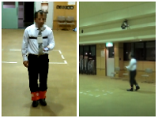
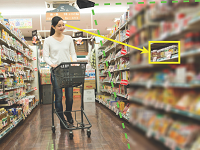

全体スケジュール
9月26日 [1日目]
| 時刻 | 内容 |
|---|---|
| 13:00 | オープニング |
| 13:30 | デモ中継 |
| 14:00 | デモ・ポスターセッション1 |
| 15:40 | セッション1：造形 |
| 16:35 | 休憩 |
| 16:50 | セッション2：支援 |
| 17:50 | セッション終了 |
| 18:30 | 夕食（18:30～20:00、最終入場は19:30） |
| 21:00 | ナイトセッション |
9月27日 [2日目]
| 時刻 | 内容 |
|---|---|
| 07:00 | 朝食（7:00～9:00、最終入場9:00） |
| 09:00 | セッション3：映像 |
| 10:05 | 休憩 |
| 10:20 | ロングティザー・招待デモ紹介 |
| 12:10 | 昼食（12:10〜13:10、最終入場13:10） |
| 13:10 | デモ中継 |
| 13:40 | デモ・ポスターセッション2 |
| 15:20 | セッション4：操作 |
| 16:25 | 休憩 |
| 16:40 | セッション5：探索 |
| 17:35 | セッション終了 |
| 18:00 | 夕食（18:00～20:00、最終入場は19:30） |
| 21:00 | ナイトセッション |
9月28日 [3日目]
| 時刻 | 内容 |
|---|---|
| 07:00 | 朝食（7:00～9:00、最終入場9:00） |
| 09:00 | デモ中継 |
| 09:30 | デモ・ポスターセッション3 |
| 11:00 | 投票・アンケート記入 |
| 11:20 | タウンホールミーティング・クロージング（〜11:50） |
登壇発表
| 発表種別 | 時間 |
|---|---|
| ロング発表 | 発表15分＋質疑10分 |
| ショート発表 | 発表10分＋質疑5分 |
| ロングティザー | 発表5分＋質疑3分 |
セッション1：造形 [1日目 15:40–16:35]
座長：小山 裕己，チャット座長：益子 宗
[1] Liquid Pouch Motors：紙のインタフェースのための薄く軽く柔軟なアクチュエータ [Long]
要旨：本論文では，空気圧アクチュエータからチューブを廃することによって，紙のように薄く軽く柔軟で，34°C以上の熱を加えることにより自重の1000倍以上の負荷を約30%引っ張ることのできるアクチュエータ，Liquid Pouch Motorsを提案する．
採録時コメント：本論文では低沸点の液体を用いた軽量薄型、かつ、十分な力を実現するアクチュエータの提案している。応答速度に課題が残るが、体温程度の熱を加えることで可動でき、簡単に量産できる点はインタラクティブコンテンツ制作において有用性が高い。また、様々な作品制作に応用可能であることが実際に示され、技術的な発展性も高い。WISSでは、提案されたアクチュエーターを活用してどういったコンテンツに応用できるかなどを議論したい。
[2] クラフトバンドを利用した紙工作のためのモデリング手法 [Short]
要旨：本稿ではクラフトバンド工作に着目して初心者を対象にしたデザイン支援システムを提案する．クラフトバンドは紙であり制作時に試行錯誤がしづらい素材であるが，本システムを使用することで試行錯誤をシステム内で行うことができ，初心者でもイメージをつかんでからオリジナルデザインを制作することができる．システムの実装にあたって，インタフェースの設計とモデリング手法を提案する．
採録時コメント：手芸支援システムの研究はこれまでにいくつか提案されてきているが、本研究では中でもクラフトバンドを利用した紙工作を対象にシステム設計と実装を行なった点が新しい。また、提案システムによって様々な作品が制作可能であることが実際に示されている点も面白い。WISSでは、提案システムを用いない場合の制作に比べどんな利点が得られるのか、システムの対象者の習熟度に応じてどのような効果が期待できるかなどを議論したい。
[3] TracKenzan：トラックパッドとタッチペンを用いたいけばな練習システム [Short]
要旨：本論文では3D-CG空間でいけばなを練習するシステムTracKenzanを提案する．TracKenzanでは，トラックパッドとタッチペンをそれぞれ剣山と花軸に見立てて操作し，3D-CG内で花を生ける．剣山と花軸の形状に近い入力デバイスを用いた直感的な操作と，何回でも試行錯誤が可能な3D-CG花材の切断，復元，挿し直し操作によるいけばな練習環境を実現した．TracKenzanをいけばな初心者といけばな経験者に対して評価実験をしたところ，ユーザビリティについて高い評価を得た．
採録時コメント：トラックパッドとタッチペンを用いたいけばな練習支援システムを提案しています．システムの完成度の高さ，および，ユーザスタディによるシステムの有効性の検証に関して特に高く評価しました．トラックパッドとタッチペンというシンプルなインタフェースの組み合わせでどこまでいけばなの複雑な技法を再現できるのか，学習の効率がどれだけ向上するのかについて議論したいと考えています．
セッション2：支援 [1日目 16:50–17:50]
座長：阪口 紗季，チャット座長：大坪 五郎
[4] リアルタイム経路生成と振動通知による視覚障害者の歩行支援システム [Short]

要旨：本研究では視覚障害者の自由な歩行を支援するモバイル・ウェアラブルシステムの実現を目指す．当事者ヒアリングによって得られた，求められている機能や仕様制約を議論した上で障害物検知・経路生成・振動通知により構成される歩行支援システムを提案する．このシステムを前段と後段にわけて実装し，経路の伝達手法について実際に視覚障害者による使用感評価を行ったところ，安心感がある・自然に使えるという好意的な評価を得た．
採録時コメント：本研究では，提案システムの実際のターゲットとなる視覚障害者や支援者へのインタビューや議論をもとに必要な機能を定義，設計し，着実な開発を進めているという点で高く評価でき，提案システムのシンプルかつ有効性が高い点についても高く評価しました．システムの装着，操作方法やナビゲーションや警告時の伝達方法について議論できるとユーザにとってより使いやすいシステムになると考えます．
[5] プログラミング教育への興味喚起を目的とした迷路型STEM教育ツールの提案と実装 [Short]
要旨：本研究では, プログラミング教育そのものを行うものではなく, プログラミングに慣れ親しみ, 興味を喚起することを目的とし, 国際的にも年代的にも親しみやすい迷路を題材とした. 迷路を遊び・作る過程で浮上する様々な問題の原因を突き止め, 部分ごとにデバッグを重ね, 修正し, 完成を目指すことで, 論理的思考を養う迷路型STEM教育ツールを提案し, 実装した.
採録時コメント：STEM教育ツールとして独自の着眼点があり、エンターテインメント作品としても興味深いです。実装の完成度も十分高いと判断しました。新規性や有用性について，会場で議論できることを期待しています。
[6] 登壇発表におけるライブ中継のためのスイッチング支援システムの構築 [Short]
要旨：本研究では、登壇発表におけるライブ中継のためのスイッチング支援システムを提案します。57件のプロフェッショナルスイッチャのスイッチングを分析した結果、プロフェッショナルスイッチャは登壇発表における発表者のスライド送りや、スクリーンへの指差しといったイベントなどにもとづきスイッチングしていることが明らかになりました。スイッチング初心者でも直観的にスイッチングできることを目指し、スイッチング特性を反映したイベントベースのスイッチングインタフェースを検討しました。
採録時コメント：映像のスイッチングを支援するシステムがいくつか提案されている中、本研究は登壇発表におけるスイッチングに特化したインタフェースをデザインしている点に新規性があります。評価実験によって、提案手法を用いたスイッチングが既存手法でのスイッチングに比べプロのスイッチングに近似していることが示された点は興味深く、初心者の支援システムとしての有用性が示されています。WISS2018では、提案システムにさらに追加すべき機能や、改良すべきインタフェースデザインについて議論させていただきたいです。
[7] HapTalker：視覚障害者のための電子書籍向けユーザインタフェースの提案 [Short]
要旨：本研究の目的は弱視および全盲の障害者が日常的に，不自由なく電子書籍を利用できる環境の構築である．視覚障害者向けタッチスクリーンデバイス用電子書籍リーダ「HapTalker」の設計をおこなった．HapTalkerを設計する過程で視覚障害者にとって扱いやすいユーザインタフェースを探った．ユーザインタビューの結果，HapTalkerにはユーザにとって一定の有用性があることが分かった．
採録時コメント：本論文では視覚障害者向けの電子書籍読み上げインタフェースが提案，実装されています．当事者の視点に立った議論の上に提案と評価が行われており，「見ないと押せないようなボタン」を回避するUIがポイントとなっています．実際の使用感が詳細に分かるデモ版があり，会場では操作感などに関して議論できればと期待します．
セッション3：映像 [2日目 09:00–10:05]
座長：五十嵐 悠紀，チャット座長：伊藤 正彦
[8] ボウルディスプレイ：半球型全周囲ディスプレイ [Long]
要旨：両面観察可能な半透明のおわん型ディスプレイ「ボウルディスプレイ」は全天周映像を見るための半球型全周囲ディスプレイである．ボウルディスプレイは「俯瞰」「一人称視点」「擬似三人称視点」の3種類の観察が可能である．この3通りの見方を両立させることで，今までの平面ディスプレイやHMDで問題となっていた，遠隔物体のコントロールを行う際に操縦者が「後ろで起きていることに気づかない」という問題を解決する．
採録時コメント：おわん型のディスプレイという、見る角度を変えることにより「俯瞰」・「一人称視点」・「疑似三人称視点」という三つの視点を提供できるディスプレイを提案している。おわん型により内側と外側を同時に覗くことで「擬似三人称視点」での観察を可能にするという着眼点は興味深く、新しい切り口での提案である。実装方法に関して十分な検討と説明がされており、動画からも実装がしっかりとされていることがわかる。他のアプリケーションへの応用可能性についてWISSの場で議論したい。
[9] CompoundDome: スクリーンを部分的に透過することにより現実世界とインタラクションを可能にする装着型ドーム装置 [Long]
要旨：仮想空間を体験する手法として，頭部搭載型ディスプレイ（HMD）が広く使われているが，face to faceのコミュニケーションが困難であるという課題がある．本稿では，ドーム状の装置を装着し装着者の視界を覆うようにドームに映像を投影する，CompoundDomeを提案する．また，ドームにメッシュ状にスクリーン塗料を塗布し，映像を投影すると映像が見え，投影しないとドームの外側が見える機構を実現した．
採録時コメント：本研究の提案は，HMD等既存のデバイスでは成し得ないインタラクションデザインの実現が期待できる点で高く評価されている．査読者から指摘があったシステムの構造や評価手法の他，本提案装置の活用場面など，その有用性や応用可能性について議論ができればと思う．
[10] 実物体への映像投影による見かけの変化を用いた視線誘導の提案 [Short]

要旨：現実世界の物体に映像を投影し，見かけを変化させることで視線誘導を行う手法を提案する．光軸一致プロカムシステムによって物体を撮影し，画像処理を施して物体自身に重畳投影する．画像処理手法として，画像全体を左右に数ピクセルずつずらす，ずらしフィルタを提案する．ずらしフィルタを適用した画像の一部を原画像に差し替えて投影することで，物体全体がぶれて見える中，一部が鮮明に見える現象を利用して視線誘導を行う．
採録時コメント：実物体を対象とした、「さりげない」視線誘導手法というのが注目のしどころ。光軸一致型のプロカムベースなので、キャリブレーションの手間が軽減されているとのこと。どこまで気付かれにくい誘導が可能なのか、どのような物体に対して有効なのか、といった点を議論したい。
セッション4：操作 [2日目 15:20–16:25]
座長：杉浦 裕太，チャット座長：真鍋 宏幸
[11] Ohmic-Sticker: 静電容量方式タッチサーフェスへの貼付によりForce-to-Motionを実現する入力機器 [Long]
要旨：静電容量方式のタッチサーフェス上へ貼り付けるだけの簡単な作業で取り付け可能なForce-to-Motion方式の入力機器，Ohmic-Stickerを提案する．プリント基板上へ加圧により抵抗値が変化する感圧センサを設置し，タッチサーフェス内電極からの流出電流を用いて抵抗値変化を計測することで，指先の微細運動による0.5DoFから6.0DoF（以上）の入力を実現する．
採録時コメント：タッチパッドの上にフォースセンサを実装する手法の提案です．昨年度の最優秀論文賞と発表賞を受賞したOhmic-Touchを拡張しています．新規性，有用性，正確性，論文の記述，いずれの観点からも高く評価することができる論文です．トップカンファレンスや実用化に向けて，さらなる発展の可能性や手法の評価方法などについて多くの人と議論し，研究の質をより一層高めていくことを強く期待しています．
[12] Copernican-Touch: タッチサーフェスを指へ向けて接触させる動作を用いたタッチ入力拡張手法 [Long]
要旨：スマートフォンおよびスマートウォッチにおいて，通常のタッチ入力動作とは対称的な，“デバイス側を指に向けて移動させる動作”によりデバイス画面と指を接触させ，タッチ入力を拡張する手法Copernican-Touchを提案する．本手法はタッチ入力発生直前（500ms）のデバイスの動きによる加速度・ジャイロセンサ等の値を用い，タッチした直後に待機時間なく対応するコマンドを実行することが可能とする．
採録時コメント：スマートフォン等のタッチサーフェスをタップする際、指ではなタッチサーフェス側（デバイス側）を動かしてタップすると、内蔵する加速度センサー等により通常のタップと区別でき、別の入力として扱えるという内容です。動かす主体を逆転させるという発想は面白く、シンプルでありながら有用性があると言えます。認識率を向上させるための工夫や、デバイスの大きさ・持ち方による変化等を議論したいと思います。
[13] PrintMotion: 3Dプリンタに搭載されたアクチュエータを使用して印刷物を動かす手法の提案 [Short]
要旨：溶解積層方式 (FDM) 3Dプリンタに搭載されたアクチュエータを利用して，3Dプリントされたオブジェクトを動かす手法 PrintMotionを提案する．本稿では，FDM 3Dプリンタに装備されたアクチュエータのみを使用して動かすことが可能な機構と，オブジェクトの動きをデザインすることができるソフトウェア，それらを用いて製作したアプリケーションを紹介する．
採録時コメント：本研究では、3Dプリンタに搭載されたアクチュエータを用いて、3Dプリンタで成型したオブジェクトに動きを与える研究で、アイディア自体を高く評価しました。WISSの場では、3Dプリンタが将来どのように進化するかという世界観を含めて本研究の議論ができると良いと思います。
セッション5：探索 [2日目 16:40–17:35]
座長：樋口 啓太，チャット座長：宮下 芳明
[14] Query-by-Dancing: 身体動作の類似性に基づくダンス楽曲検索システム [Long]
要旨：ダンス動画データベース中を検索するためのクエリとして，ユーザのダンス動作を用いるQuery-by-Dancingを開発した．このシステムは，クエリであるダンスに含まれるポーズ（姿勢）とモーション（動作）を抽出し，それらに類似したポーズとモーションが含まれるダンス動画を検索する．得られたダンス動画に付随する楽曲を用いることで，自分のダンスに適した楽曲を検索できる．
採録時コメント：ダンス動作をクエリとする検索システムは（OpenPose等の応用として今後いつ他から発表されるか予断を許しませんが）十分な新規性を持っており、有用でもあると思います。これまでそうした検索をすることすらできなかったので、ダンサーのみならず一般のユーザにとっても有益だと感じています。ぜひ、検索システムとしての評価、実用性についての議論を行いたいです。
[15] 回答における偏りを考慮したクラウドソーシングの早期終了手法 [Short]
要旨：本稿では、クラウドソーシングによる意思決定において，利用するクラウドワーカーの数を動的に調整する方法を提示する．基本的なアイデアは，これまでのクラウドワーカーの反応が十分に偏っていた場合，クラウドワーカーの募集を終了する，というものである． 本稿では，クラウドワーカーの募集をいつ終了するかを決定する基準を提示し，数値分析と実際のクラウドソーシングによる実験によってその有効性を検証する．これらの結果により，提案手法を用いることで，単純な終了基準を使用する標準的な方法と比較して，精度を維持しながら利用するワーカーの数を大幅に減らすことができることを示す．
採録時コメント：査読者3名とも、提案手法によりクラウドソーシングを用いて二択の候補から優れているものを選択する際にワーカーの数が削減されコストが抑えられることを評価しています。HCI研究においてクラウドソーシング技術が積極的に取り入れられている現状を考えると興味深いリザルトであると考えます。WISSでは、提案手法をどのようにインタラクティブシステムの設計に活かしていくのか、という点も議論したいです。
[16] Plotshop : 散布図上で２次元データ分布を作成及び編集するための対話的なシステム [Short]
要旨：本研究では２次元数値データを散布図上で作成及び，編集するための対話的なシステムを提案する．従来のデータを作成する手法で得られるデータは単純な形式のものに限られるため，アルゴリズムの挙動を確認するためのテストデータとして用いるには不十分であった．散布図上で２次元数値データ分布を視覚的に作成，編集できる機能により本システムは統計的なデータ分析手法の特性の理解と比較のための道具としての応用が期待できる．
採録時コメント：2次元データに対するクラスタリングや回帰分析等の統計的分析手法の挙動を確認・理解することを目的として，2次元の点からなるテストデータを散布図上で視覚的・対話的に作成するという試みは新しい．描画エディタのような操作によって，個々のデータを選択して確率分布のパラメータ推定と再生成を行うというインタフェースも興味深い．論文中に示されている様々な事例からも有用性と汎用性の高さが理解できる．
サムネイル画像（4:3）及び要旨（上限200文字）の提出・差し替えに関する連絡先：2018web at wiss.org